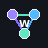

Thủ công: mỗi dòng imagePrompt|videoPrompt. Server: nhận trực tiếp RUN_FLOW_JOB JSON, popup có thể đóng hoàn toàn.
Kiến trúc: 1 tab · 1 nút Create · 1 submit dispatcher. Ảnh giữ đầy tối đa 9 slot, video tối đa 4 slot. IMAGE và VIDEO chỉ xếp hàng; dispatcher xử lý từng submit nên không đụng Settings/Prompt/Asset Picker cùng lúc.
Submit mặc định: FIFO từng nhóm + ưu tiên video nhẹ. Trong mỗi nhóm vẫn đúng thứ tự; khi video có slot và đã có ảnh sẵn sàng thì video được lấy trước.
Ingredient: nếu Flow dịch prompt ảnh sang tiếng Anh, extension dùng prompt/title mà Flow trả về để lọc Asset Picker, sau đó vẫn bắt buộc chọn đúng imageMediaId. Chuỗi Search được giữ nguyên văn; không tự thêm hoặc bỏ dấu chấm.
Project/View: khi bấm Chạy, extension kiểm tra URL. Nếu chưa ở Flow thì mở Flow; nếu chưa ở Project thì tự bấm tạo Project mới; sau đó tự chuyển về All Media trước khi thao tác.
chrome.debugger.ws://127.0.0.1:3000/ws/flow. Nếu server đang chạy, extension tự kết nối và nhận job.